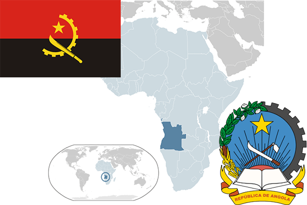

To`liq nomi: Angola Respublikasi
Region: Janubi-G`arbiy Afrika
Qonunchilik shakli: Respublika
Mustaqillik kuni: 11.11.1975 yil Portugaliyadan
Poytaxti: Luanda
Maydoni: 1,246,700 km² (dunyoda 22 -o`rinda )
Chegaradosh davlatlari: Mavritaniya, Zambiya, Namibiya
Aholisi: 29 310 273 (dunyoda 46 -o`rinda ) 2017 roʻyxat
Aholi zichligi: 20,69 /km²
Aholining o`rtacha yoshi: 37,65 yil ( 38,6 ayollar, 36,7 erkaklar)
Rasmiy tili: Portugal tili
Dini: 90% mahalliy an’anaviy dinga, 10% Katolik
Pul birligi: Kvanza (AOA)
Telefon prefiksi: +244
Internet domen: .ao
Xalqaro tashkilotlarga a`zoligi: OPEC (Neftni eksport qiluvchi davlatlar tashkiloti) 2007-yil. BMT (1976-yil).
Dengiz va okeanlarga chiqishi: Atlantika okeani
YIM: Butun: $ 194,055milliard, Jon boshiga: $ 7 501 (2016 - yil roʻyxati)
Yirik shaharlari: Luanda, Kabinda, Uambo, Lubango, Kvito